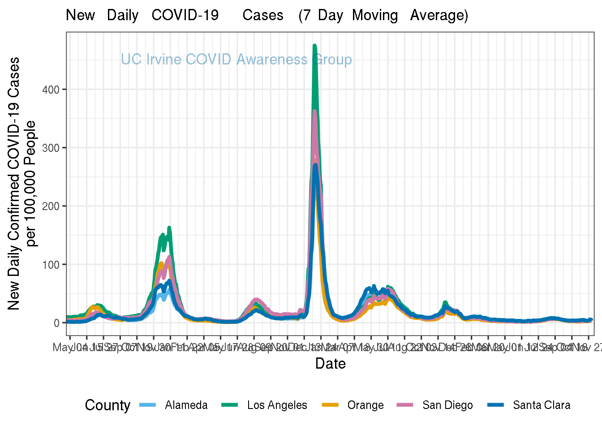

COVID-19 Trends by UCI Statistics
Last updated: 2020-08-06
Checks: 7 0
Knit directory: uci_covid19_dashboard/
This reproducible R Markdown analysis was created with workflowr (version 1.6.2). The Checks tab describes the reproducibility checks that were applied when the results were created. The Past versions tab lists the development history.
Great! Since the R Markdown file has been committed to the Git repository, you know the exact version of the code that produced these results.
Great job! The global environment was empty. Objects defined in the global environment can affect the analysis in your R Markdown file in unknown ways. For reproduciblity it’s best to always run the code in an empty environment.
The command set.seed(20200714) was run prior to running the code in the R Markdown file. Setting a seed ensures that any results that rely on randomness, e.g. subsampling or permutations, are reproducible.
Great job! Recording the operating system, R version, and package versions is critical for reproducibility.
Nice! There were no cached chunks for this analysis, so you can be confident that you successfully produced the results during this run.
Great job! Using relative paths to the files within your workflowr project makes it easier to run your code on other machines.
Great! You are using Git for version control. Tracking code development and connecting the code version to the results is critical for reproducibility.
The results in this page were generated with repository version 5248953. See the Past versions tab to see a history of the changes made to the R Markdown and HTML files.
Note that you need to be careful to ensure that all relevant files for the analysis have been committed to Git prior to generating the results (you can use wflow_publish or wflow_git_commit). workflowr only checks the R Markdown file, but you know if there are other scripts or data files that it depends on. Below is the status of the Git repository when the results were generated:
Ignored files:
Ignored: .Rhistory
Ignored: .Rproj.user/
Note that any generated files, e.g. HTML, png, CSS, etc., are not included in this status report because it is ok for generated content to have uncommitted changes.
These are the previous versions of the repository in which changes were made to the R Markdown (analysis/index.Rmd) and HTML (docs/index.html) files. If you’ve configured a remote Git repository (see ?wflow_git_remote), click on the hyperlinks in the table below to view the files as they were in that past version.
| File | Version | Author | Date | Message |
|---|---|---|---|---|
| html | 35e30c1 | vnminin | 2020-08-06 | daily data update; I am a good robot |
| html | 7334400 | vnminin | 2020-08-05 | data update |
| Rmd | 6466f12 | vnminin | 2020-08-04 | data pull and fixed the last date being cut off |
| html | 6466f12 | vnminin | 2020-08-04 | data pull and fixed the last date being cut off |
| html | 5db0d2e | vnminin | 2020-08-03 | data update |
| html | 4afb037 | vnminin | 2020-08-02 | forgot to republish |
| html | e3847ed | vnminin | 2020-08-02 | added testing maps |
| html | a873dd5 | vnminin | 2020-08-01 | data update |
| html | 8d0b6ce | vnminin | 2020-08-01 | daily date update |
| html | e024ad3 | Damon Bayer | 2020-07-31 | Positivity Maps + Navigation Updates |
| html | d621638 | Damon Bayer | 2020-07-31 | Icons in navigation |
| html | 490ebde | vnminin | 2020-07-31 | daily data pull |
| html | 4b572aa | vnminin | 2020-07-30 | fixing Trends navigation |
| html | acc591d | vnminin | 2020-07-30 | time stamp for maps |
| html | a93ad42 | vnminin | 2020-07-30 | now really changing filel name |
| html | b785fc2 | Damon Bayer | 2020-07-30 | Wider Maps page |
| html | 7e4cb79 | vnminin | 2020-07-30 | republishing just in case |
| html | 244103f | vnminin | 2020-07-30 | rebuilt just in case |
| Rmd | 9b1533f | Damon Bayer | 2020-07-30 | Separate Maps Page |
| html | 9b1533f | Damon Bayer | 2020-07-30 | Separate Maps Page |
| Rmd | cb818d8 | Damon Bayer | 2020-07-30 | Added maps |
| html | cb818d8 | Damon Bayer | 2020-07-30 | Added maps |
| html | a4d0d51 | vnminin | 2020-07-29 | pulling the most recent data from ca portal |
| html | 7d0bcf4 | vnminin | 2020-07-28 | experimenting with spacing and sizing of logos |
| html | 0590a7c | Damon Bayer | 2020-07-28 | Even better colors |
| html | a5a62c9 | Damon Bayer | 2020-07-28 | Better Colors |
| html | 68acc48 | vnminin | 2020-07-28 | added IDS logo |
| html | 86b4d4a | vnminin | 2020-07-28 | Build site. |
| Rmd | 9011d17 | vnminin | 2020-07-27 | adjusted watermark |
| html | 9011d17 | vnminin | 2020-07-27 | adjusted watermark |
| html | abd9c55 | Damon Bayer | 2020-07-27 | Update HTML |
| Rmd | eaeac27 | Damon Bayer | 2020-07-27 | Better Watermarks #3 |
| Rmd | 89bec5b | Damon Bayer | 2020-07-27 | Fix Legend #2 |
| html | 84ab7e1 | vnminin | 2020-07-27 | july 27 ca data update |
| html | bab42bc | vnminin | 2020-07-26 | triggering an update with latest data |
| Rmd | f08c6cc | Damon Bayer | 2020-07-24 | Watermark & Legend Fix |
| html | f08c6cc | Damon Bayer | 2020-07-24 | Watermark & Legend Fix |
| Rmd | ed98b18 | Damon Bayer | 2020-07-24 | Fix Site Title on Home |
| html | eb680ce | vnminin | 2020-07-24 | republishing to update plots |
| Rmd | 9a5a980 | vnminin | 2020-07-23 | moved a bit stay at home text |
| html | 9a5a980 | vnminin | 2020-07-23 | moved a bit stay at home text |
| Rmd | f07587a | vnminin | 2020-07-23 | all plots start on the same date; moved subtitle to title |
| html | f07587a | vnminin | 2020-07-23 | all plots start on the same date; moved subtitle to title |
| html | 9aa359e | vnminin | 2020-07-23 | shortenting title for friendlier mobile version |
| Rmd | c14824c | Damon Bayer | 2020-07-23 | Remove Home text |
| html | c14824c | Damon Bayer | 2020-07-23 | Remove Home text |
| Rmd | 9ccdb5d | vnminin | 2020-07-22 | playing with appearance |
| html | 9ccdb5d | vnminin | 2020-07-22 | playing with appearance |
| Rmd | 938ccdf | Damon Bayer | 2020-07-22 | 2 Column Layout |
| html | 938ccdf | Damon Bayer | 2020-07-22 | 2 Column Layout |
| html | b4fb3ae | Damon Bayer | 2020-07-21 | update 2020-07-21 |
| html | c95cee3 | Damon Bayer | 2020-07-20 | Hide Workflowr buttons |
| Rmd | 7bd8ff7 | Damon Bayer | 2020-07-20 | Y Axis Labels |
| Rmd | 77cc6b0 | Damon Bayer | 2020-07-20 | Fix Stay at Home text position |
| html | 77cc6b0 | Damon Bayer | 2020-07-20 | Fix Stay at Home text position |
| html | 5369804 | Damon Bayer | 2020-07-19 | Update 2020-07-19 |
| Rmd | 32aeff8 | Damon Bayer | 2020-07-17 | Orange County is Orange |
| html | 32aeff8 | Damon Bayer | 2020-07-17 | Orange County is Orange |
| Rmd | bc97c2a | Damon Bayer | 2020-07-17 | Changes from plot feedback |
| html | bc97c2a | Damon Bayer | 2020-07-17 | Changes from plot feedback |
| Rmd | 02dbf86 | Damon Bayer | 2020-07-17 | New Data + ICU Occupancy |
| html | 02dbf86 | Damon Bayer | 2020-07-17 | New Data + ICU Occupancy |
| html | 65c7195 | Damon Bayer | 2020-07-16 | theme change |
| html | cc4c194 | Damon Bayer | 2020-07-16 | First Draft |
| Rmd | 68a123b | Damon Bayer | 2020-07-16 | workflowr::wflow_git_commit(all = T) |
| Rmd | de88c5a | Damon Bayer | 2020-07-16 | workflowr::wflow_git_commit(all = T) |
| html | de88c5a | Damon Bayer | 2020-07-16 | workflowr::wflow_git_commit(all = T) |
| html | 6b4b352 | Damon Bayer | 2020-07-14 | Build site. |
| Rmd | 524eb53 | Damon Bayer | 2020-07-14 | wflow_publish(“analysis/index.Rmd”) |
| Rmd | 66110a1 | Damon Bayer | 2020-07-14 | Initial Proof of Concept |
| html | 66110a1 | Damon Bayer | 2020-07-14 | Initial Proof of Concept |
| Rmd | 6151dc8 | Damon Bayer | 2020-07-14 | Start workflowr project. |

| Version | Author | Date |
|---|---|---|
| 35e30c1 | vnminin | 2020-08-06 |
| 7334400 | vnminin | 2020-08-05 |
| 6466f12 | vnminin | 2020-08-04 |
| 5db0d2e | vnminin | 2020-08-03 |
| e3847ed | vnminin | 2020-08-02 |
| 8d0b6ce | vnminin | 2020-08-01 |
| 490ebde | vnminin | 2020-07-31 |
| 244103f | vnminin | 2020-07-30 |
| cb818d8 | Damon Bayer | 2020-07-30 |
| 86b4d4a | vnminin | 2020-07-28 |
| 9011d17 | vnminin | 2020-07-27 |
| abd9c55 | Damon Bayer | 2020-07-27 |
| 84ab7e1 | vnminin | 2020-07-27 |
| bab42bc | vnminin | 2020-07-26 |
| f08c6cc | Damon Bayer | 2020-07-24 |
| eb680ce | vnminin | 2020-07-24 |
| 9a5a980 | vnminin | 2020-07-23 |
| f07587a | vnminin | 2020-07-23 |
| 9aa359e | vnminin | 2020-07-23 |
| 9ccdb5d | vnminin | 2020-07-22 |
| 938ccdf | Damon Bayer | 2020-07-22 |

| Version | Author | Date |
|---|---|---|
| 35e30c1 | vnminin | 2020-08-06 |
| 7334400 | vnminin | 2020-08-05 |
| 6466f12 | vnminin | 2020-08-04 |
| 5db0d2e | vnminin | 2020-08-03 |
| e3847ed | vnminin | 2020-08-02 |
| 8d0b6ce | vnminin | 2020-08-01 |
| 490ebde | vnminin | 2020-07-31 |
| 244103f | vnminin | 2020-07-30 |
| cb818d8 | Damon Bayer | 2020-07-30 |
| 86b4d4a | vnminin | 2020-07-28 |
| 9011d17 | vnminin | 2020-07-27 |
| abd9c55 | Damon Bayer | 2020-07-27 |
| 84ab7e1 | vnminin | 2020-07-27 |
| bab42bc | vnminin | 2020-07-26 |
| f08c6cc | Damon Bayer | 2020-07-24 |
| eb680ce | vnminin | 2020-07-24 |
| 9a5a980 | vnminin | 2020-07-23 |
| f07587a | vnminin | 2020-07-23 |
| 9aa359e | vnminin | 2020-07-23 |
| 9ccdb5d | vnminin | 2020-07-22 |
| 938ccdf | Damon Bayer | 2020-07-22 |

| Version | Author | Date |
|---|---|---|
| 35e30c1 | vnminin | 2020-08-06 |
| 7334400 | vnminin | 2020-08-05 |
| 6466f12 | vnminin | 2020-08-04 |
| 5db0d2e | vnminin | 2020-08-03 |
| e3847ed | vnminin | 2020-08-02 |
| 8d0b6ce | vnminin | 2020-08-01 |
| 490ebde | vnminin | 2020-07-31 |
| 244103f | vnminin | 2020-07-30 |
| cb818d8 | Damon Bayer | 2020-07-30 |
| 86b4d4a | vnminin | 2020-07-28 |
| 9011d17 | vnminin | 2020-07-27 |
| abd9c55 | Damon Bayer | 2020-07-27 |
| 84ab7e1 | vnminin | 2020-07-27 |
| bab42bc | vnminin | 2020-07-26 |
| f08c6cc | Damon Bayer | 2020-07-24 |
| eb680ce | vnminin | 2020-07-24 |
| 9a5a980 | vnminin | 2020-07-23 |
| f07587a | vnminin | 2020-07-23 |
| 9aa359e | vnminin | 2020-07-23 |
| 9ccdb5d | vnminin | 2020-07-22 |
| 938ccdf | Damon Bayer | 2020-07-22 |

| Version | Author | Date |
|---|---|---|
| 35e30c1 | vnminin | 2020-08-06 |
| 7334400 | vnminin | 2020-08-05 |
| 6466f12 | vnminin | 2020-08-04 |
| 5db0d2e | vnminin | 2020-08-03 |
| e3847ed | vnminin | 2020-08-02 |
| 8d0b6ce | vnminin | 2020-08-01 |
| 490ebde | vnminin | 2020-07-31 |
| 244103f | vnminin | 2020-07-30 |
| cb818d8 | Damon Bayer | 2020-07-30 |
| 86b4d4a | vnminin | 2020-07-28 |
| 9011d17 | vnminin | 2020-07-27 |
| abd9c55 | Damon Bayer | 2020-07-27 |
| 84ab7e1 | vnminin | 2020-07-27 |
| bab42bc | vnminin | 2020-07-26 |
| f08c6cc | Damon Bayer | 2020-07-24 |
| eb680ce | vnminin | 2020-07-24 |
| 9a5a980 | vnminin | 2020-07-23 |
| f07587a | vnminin | 2020-07-23 |
| 9aa359e | vnminin | 2020-07-23 |
| 9ccdb5d | vnminin | 2020-07-22 |
| 938ccdf | Damon Bayer | 2020-07-22 |
Data collected from the California Open Data Portal.
Last updated 2020-08-06.
R version 4.0.0 (2020-04-24)
Platform: x86_64-apple-darwin17.0 (64-bit)
Running under: macOS Catalina 10.15.4
Matrix products: default
BLAS: /Library/Frameworks/R.framework/Versions/4.0/Resources/lib/libRblas.dylib
LAPACK: /Library/Frameworks/R.framework/Versions/4.0/Resources/lib/libRlapack.dylib
locale:
[1] en_US.UTF-8/en_US.UTF-8/en_US.UTF-8/C/en_US.UTF-8/en_US.UTF-8
attached base packages:
[1] stats graphics grDevices utils datasets methods base
other attached packages:
[1] cowplot_1.0.0 ckanr_0.4.0 DBI_1.1.0 ggtext_0.1.0
[5] glue_1.4.1 TTR_0.23-6 scales_1.1.1 lubridate_1.7.9
[9] forcats_0.5.0 stringr_1.4.0 dplyr_1.0.0 purrr_0.3.4
[13] readr_1.3.1 tidyr_1.1.0 tibble_3.0.3 ggplot2_3.3.2
[17] tidyverse_1.3.0 workflowr_1.6.2
loaded via a namespace (and not attached):
[1] Rcpp_1.0.5 lattice_0.20-41 zoo_1.8-8 assertthat_0.2.1
[5] rprojroot_1.3-2 digest_0.6.25 R6_2.4.1 cellranger_1.1.0
[9] backports_1.1.8 reprex_0.3.0 evaluate_0.14 httr_1.4.1
[13] pillar_1.4.6 rlang_0.4.7 curl_4.3 readxl_1.3.1
[17] rstudioapi_0.11 whisker_0.4 blob_1.2.1 rmarkdown_2.3
[21] labeling_0.3 gridtext_0.1.1 munsell_0.5.0 broom_0.7.0
[25] compiler_4.0.0 httpuv_1.5.4 modelr_0.1.8 xfun_0.15
[29] pkgconfig_2.0.3 htmltools_0.5.0 tidyselect_1.1.0 fansi_0.4.1
[33] crayon_1.3.4 dbplyr_1.4.4 withr_2.2.0 later_1.1.0.1
[37] grid_4.0.0 jsonlite_1.7.0 gtable_0.3.0 lifecycle_0.2.0
[41] git2r_0.27.1 magrittr_1.5 cli_2.0.2 stringi_1.4.6
[45] farver_2.0.3 fs_1.4.2 promises_1.1.1 xml2_1.3.2
[49] ellipsis_0.3.1 xts_0.12-0 generics_0.0.2 vctrs_0.3.1
[53] tools_4.0.0 markdown_1.1 hms_0.5.3 yaml_2.2.1
[57] colorspace_1.4-1 rvest_0.3.5 knitr_1.29 haven_2.3.1